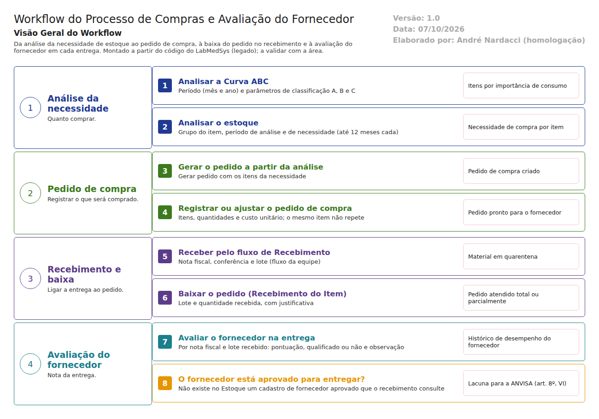
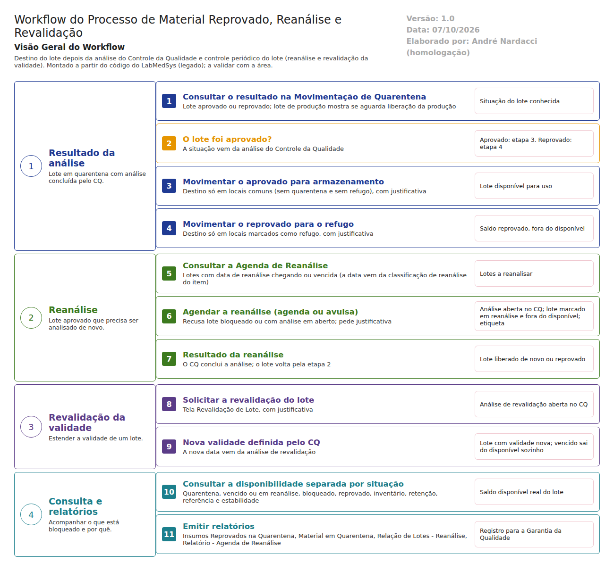
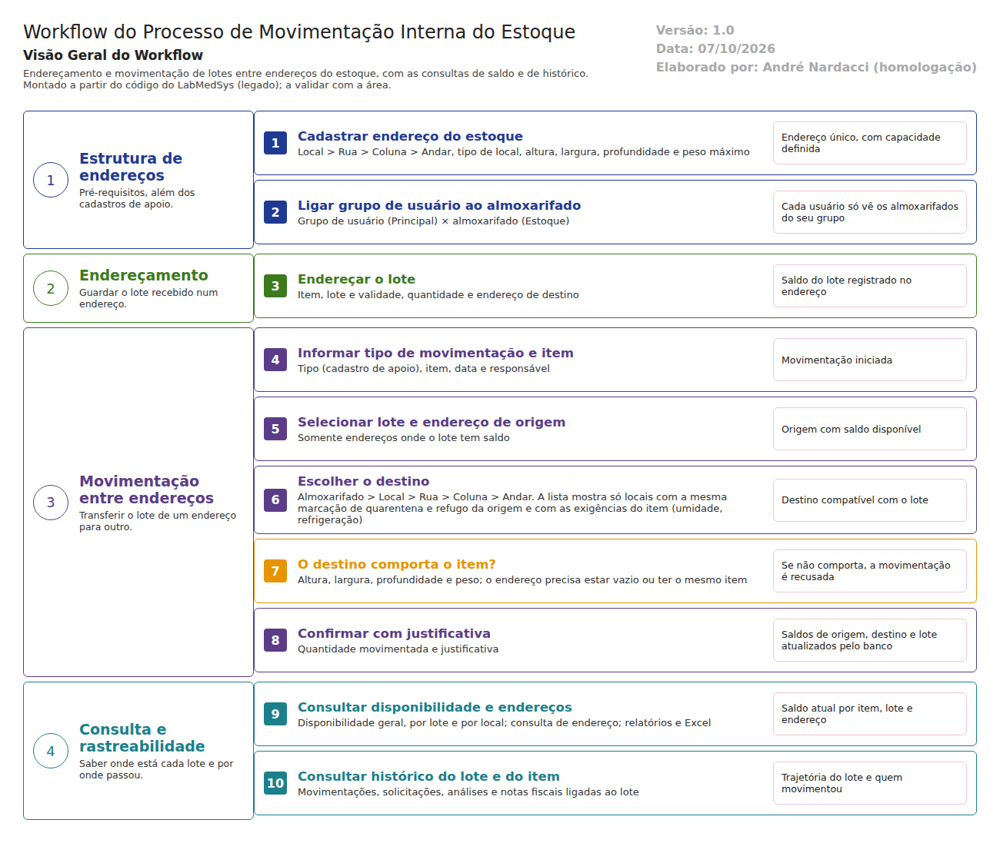
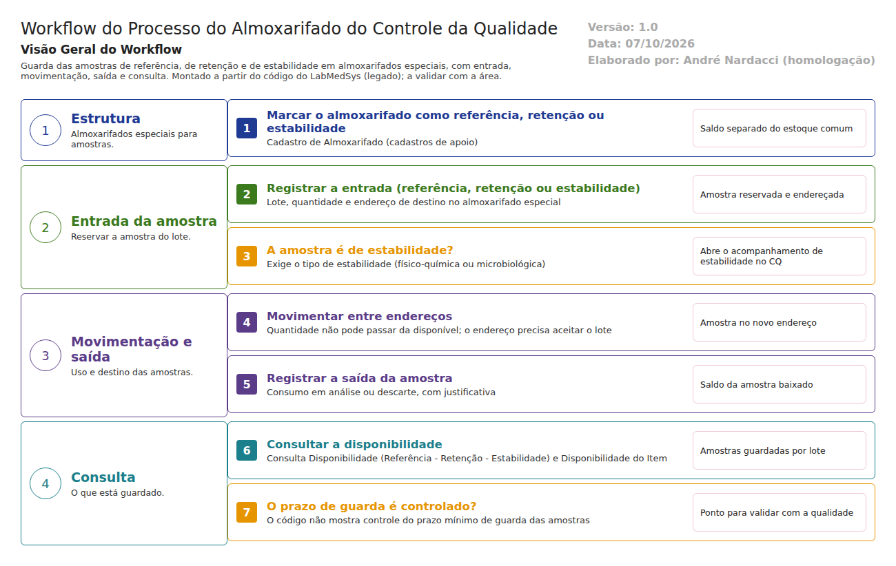
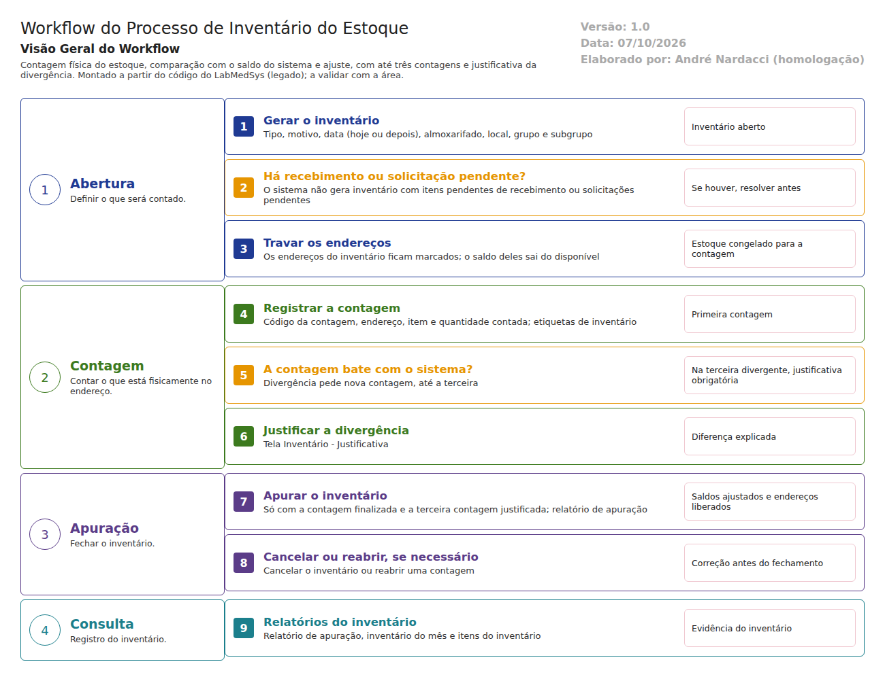
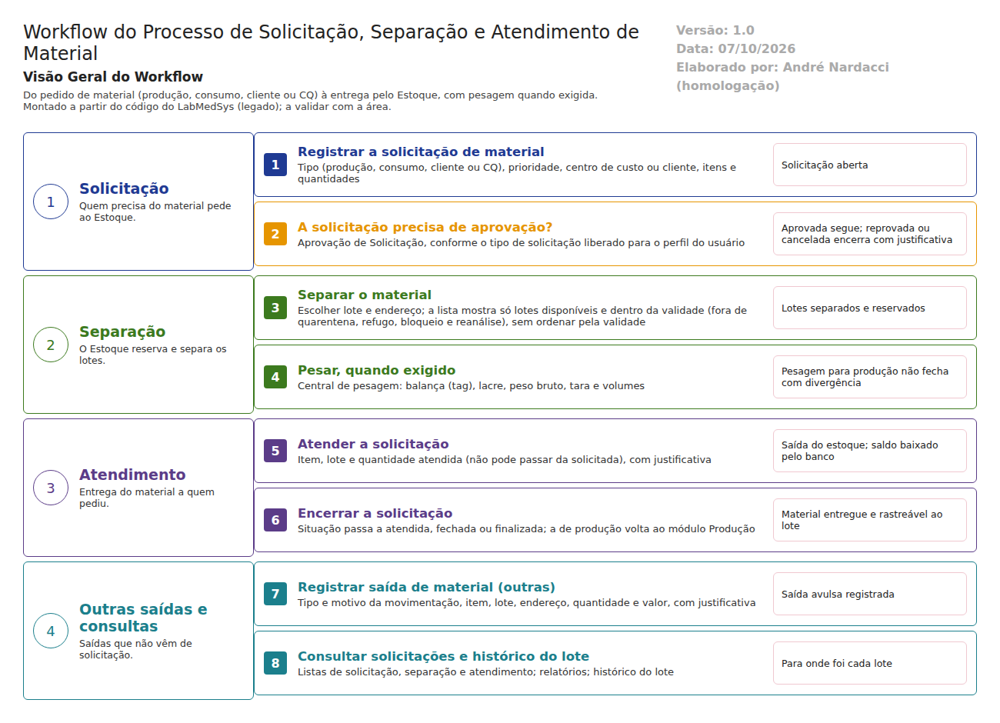
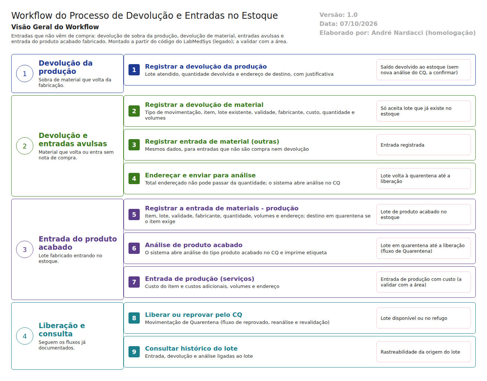
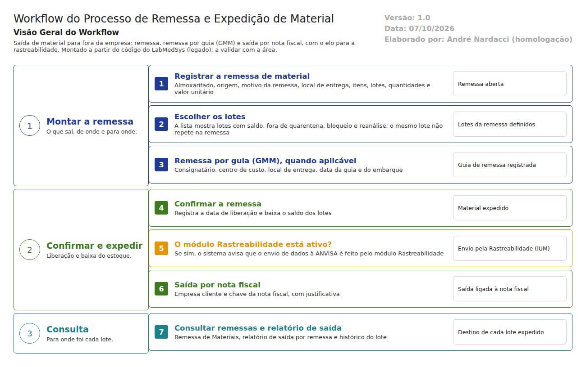
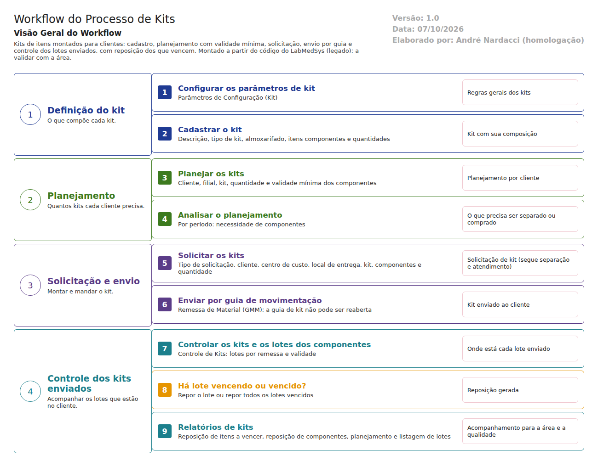

Estoque
Recebimento, quarentena, endereçamento, movimentação, atendimento à produção, devolução, remessa, inventário e kits. Dez fluxos documentados. Testes de tela por risco: 7 rodadas (07 a 13/10/2026), 78 dos 162 casos conclusivos, 37 dos 46 casos Alta; 39 defeitos para correção (11 de prioridade alta). Confirmado na tela: o Endereçamento mostra sucesso e não grava (causa no banco, aguarda o DBA); pelas entradas de material o lote entra em quarentena e abre a análise no CQ; o laudo reprovado bloqueia o lote, mas o Estoque só sabe quando alguém atualiza a análise; a avaliação do fornecedor não qualifica nem bloqueia ninguém; a entrada de produto acabado aceita lote inventado e vencido; o histórico do lote não mostra usuário, análise nem laudo. Fechado em 14/10/2026 com os cinco entregáveis: resumo executivo, dossiê, regras de negócio, análise de requisitos e manual do usuário. Reabre só se o DBA ou a área resolverem as pendências (9 casos Alta bloqueados).
- Reconhecimento
- Fluxos
- Testes
- Entregáveis
Comece aqui
O roteiro deste módulo tem 9 passos e 30 documentos, do primeiro (Resumo executivo) ao último (Versão nova: situação). Leia na ordem: cada documento leva ao próximo.
Conheça o módulo
O que é, o que tem e como as telas se organizam nos menus.
Siga o processo
Como o trabalho anda hoje, etapa por etapa, na ordem em que acontece. Onde há roteiro, ele vem logo depois do fluxo.

Compras e avaliação do fornecedor5
Reprovado, reanálise e revalidação7
Movimentação interna8
Almoxarifado do Controle da Qualidade9
Inventário10
Solicitação e atendimento à produção11
Devolução e entradas da produção12
Remessa e expedição13
KitsRegras e permissões
O que o sistema faz hoje com cada dado, quem pode fazer o quê e como usar.
O ideal: como deve funcionar
Como o módulo deve trabalhar para atender à ANVISA: funções, comportamento, integrações com os outros módulos e papéis. Mostra o que manter, corrigir e construir.
Norma e risco
O que a ANVISA exige e onde está o risco.
Testes e defeitos
O que foi testado nas telas, o que falhou e como corrigir.
Requisitos e dados
Para a equipe de desenvolvimento da nova versão.
Fechamento
O parecer do módulo, por que ele está (ou não) apto, e o dossiê que reúne tudo.
iLabPharma Novo
A versão nova do sistema (as mesmas regras com ferramentas atualizadas): o que foi testado, o que ficou igual, melhorou ou piorou em relação ao sistema entregue.
Fim do roteiro deste módulo
Segue o caminho do processo: Próximo módulo: Produção →
Antes deste: Principal